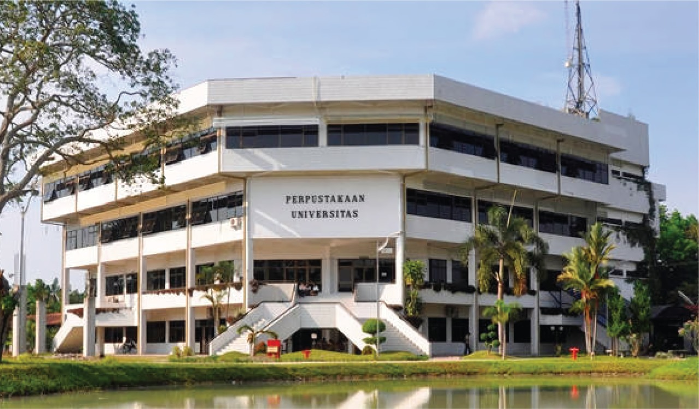

<nav>
    <div class="wrapper">
        <div class="logo"><a href=''>      Perpustakaanku    </a></div>
    </nav>
<a href ="https://library.polmed.ac.id/"target=blank"></p>
    <p><h3>perpustakaan politeknik negeri medan</p>
        <p></h1>jam operasional</p>
        <p>senin-kamis :08.00-16.30 wib </p>
        <p>jumat : 08.00-15.30 wib </p>
    <p></h3>lokasi perpustakaan</p>
    <p>Jl. Almamater No. 1, Gedung P Lantai 2,Politeknik Negeri Medan, Kampus USU, Medan</p>
    <a href ="https://www.usu.ac.id/id/berita/perpustakaan-usu-akan-dijadikan-pusat-informasi-dan-literasi/"target=blank"></p>
        <p><h3>perpustakaan Universitas Sumatera Utara</p>
        <p></h1>jam operasional</p>
        <p></h1>senin-kamis :08.00-16.00 wib</p>
        <p>jumat :08.00-15.00 wib</p>
        <a href ="https://lib.ugm.ac.id/"target=blank"></p>
            <p><h3>perpustakaan Universitas Gajah Mada</p>  
         <p></h3>layanan</p>
         <p>prosedur kunjungan tamu</p>  
         <p>jam pelayanan</p> 
         <p>keanggotaan</p>
         <p>layanan sirkulasi</p>
</body>
</html